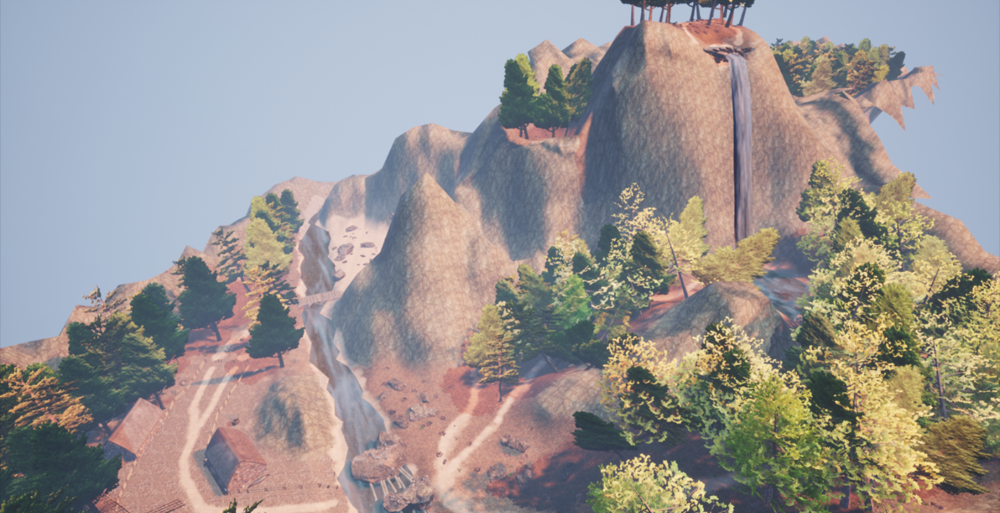
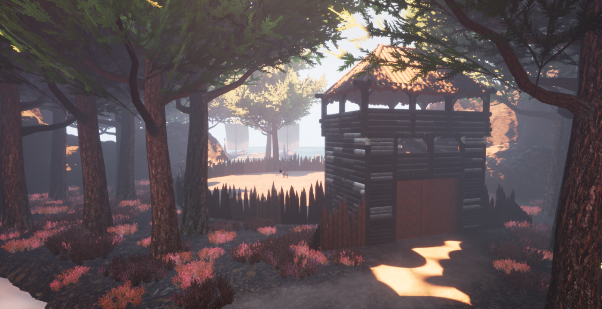
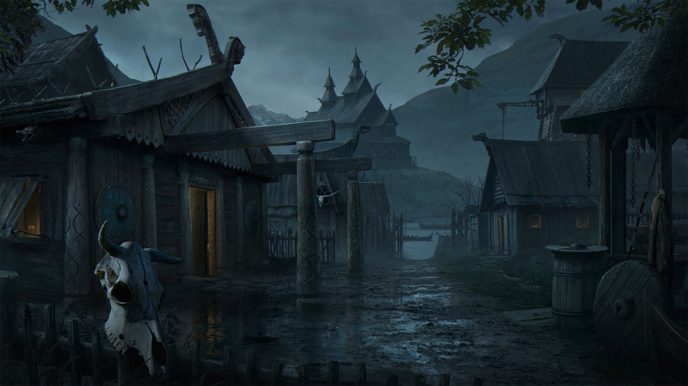

Les niveaux de RoaV

Niveau 1 : La forêt
Un parcours tracé par la nature dans les sentiers de la forêt Myrkviðr et dans les montagnes du Dulatus. On dit de cet endroit qu'il est dangereux, mais parsemé
de trésors perdus autrefois laissés par une ancienne tribu viking qui s'y était installée. Les rumeurs portent à croire qu'un gardien protégerait ces sentiers,
mais jamais personne ne l'a vu. Gare à vous et à où vous mettez les pieds, il y peut-être des pièges!

Niveau 2 : L'arène
À l'embouchure de la grotte de Norstead se trouve une veille arène de combat, tout juste bordé par le lac Aelin et ses rivières. On raconte que des esprits maléfiques
gardent cette place, des esprits qui seraient tombés au combat jadis dans leur vie antérieure. De nombreux guerriers y sont allés pour tenter de libérer la vieille arène
de ses tourments, mais aucun en est ressorti...

Niveau 3 : Le test ultime
Non loin des montagnes périlleuses se trouve un tout petit village viking du nom de Kattegat, désormais abandonné. Selon une veille légende nordique, on raconte que ce village renferme plusieurs
secrets. Des trésors peut-être? La légende raconte également qu'après plusieurs décennies de paix absolue, le peuple viking dût affronter
un terrible obstacle : la maladie. En effet, une terrible maladie infectieuse les auraient frappés et elle aurait décimé bon nombre de valeureux guerriers. Pendant que les femmes
et les enfants quittèrent à la hâte, les derniers guerriers viking auraient caché et protégé leurs trésors. Quels mystères peut bien renfermer Kattegat...